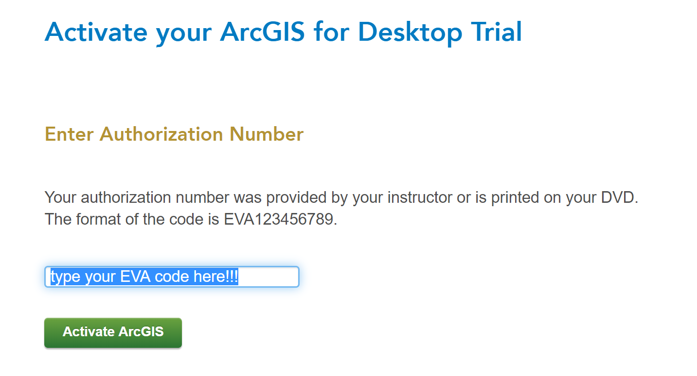
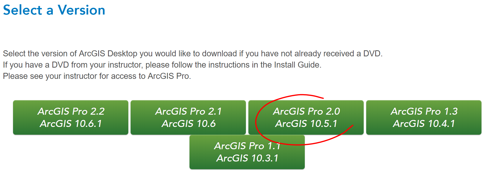

Chapter 1 ArcGIS Basics
1.1 Setup
- In this course, we run ArcMap on Windows for demonstration purposes.
A. Before you install ArcGIS for Desktop
Check first system requirements to make sure your computer has the hardware and software required for the trial.
Request your EVA code to your advisor
B. Activate your authorization code
Visit ESRI to begin the process of activating and downloading your ArcGIS for Desktop Student Trial software.
Log in using your Existing Esri account, or sign-up for a new Esri account, if necessary.
Enter the authorization code and click Activate ArcGIS.

- Click the button for the ArcGIS for Desktop software version being downloaded.

C. Download and install ArcGIS for Desktop Student Trial
If necessary, download the ArcGIS Uninstall Utility and uninstall previous versions of ArcGIS Desktop or Server. The software cannot be installed on a computer that has a previous version of ArcGIS for Desktop or ArcGIS for Server installed. It’s OK if the computer has ArcGIS Explorer installed.
If necessary, install the Microsoft .NET Framework (version 3.5 Service Pack 1 or higher).
If you are unsure if you have the .NetFramework installed, you can download a .net Version detector from the following site - http://www.asoft.be/prod_netver.html.
Determine the location for the ArcGIS for Desktop software you wish to install and click the Download button. You can also download the Tutorial Data, if desired.
Double-click ArcGIS_Desktop_10.5XXXXXXX.exe (Depending on the version you selected, the file extensions may be different) to extract the installation files.
Locate and run Setup.exe to install ArcGIS for Desktop. The “Complete” installation is recommended.
11.After the files are installed, the Authorization Wizard will open and prompt you to choose a product to authorize; select “ArcGIS Desktop Advanced (Single Use)” and click continue.
- The Authorization Wizard will prompt you for an authorization code; enter your activated code. Follow the prompts and the software will authorize and be ready for use. Note: leave the default option for the software extensions selected; they will be authorized automatically.
Support for the ArcGIS Desktop Student Trial is available at esri.com/trialhelp.
1.2 ArcGIS Basics
- ArcCatalog
- Table of Content & ArcToolbox
- Menu bar and toolbars
- Search and help
- Fundamentals of ArcGIS GUI
1.3 Basic files and first project
- File geodatabase and feature sets
- Connecting to a local geodatabase
- Saving your project with Relative path